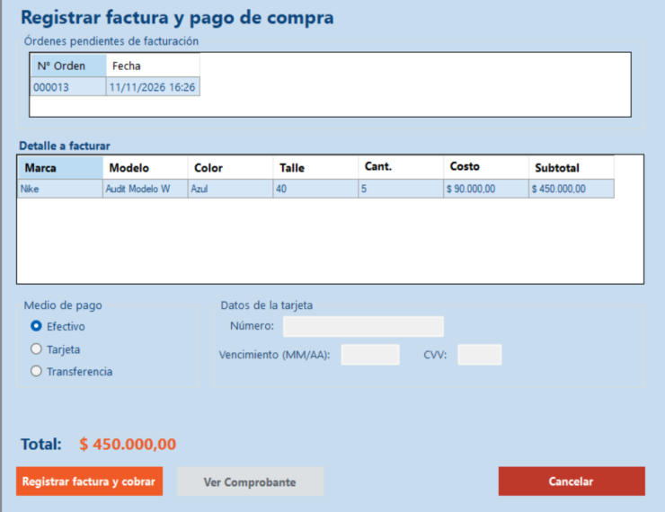
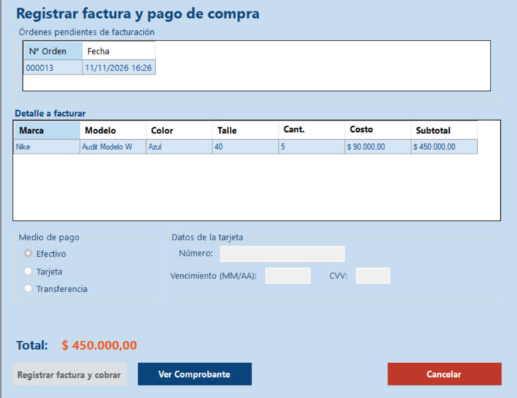

Inicio › Compra › Registrar factura y pago de compra
Registrar factura y pago de compra
Es el último paso de una compra. Elegís una orden ya recibida, el sistema arma la factura con lo que llegó, registrás el pago y las unidades se suman al stock. Al terminar se genera el comprobante en PDF.
Dónde está: Compra › Registrar factura y pago de compraLo usa: AdministradorAtajo: F1
Pasá el mouse por encima de cualquier botón o campo de la pantalla para ver qué hace.

Qué hace cada elemento
- 1Órdenes pendientes de facturaciónLas órdenes ya recibidas que todavía no se facturaron ni se pagaron.
- 2Detalle a facturarMarca, modelo, color, talle, cantidad recibida, costo y subtotal. Se factura lo que realmente llegó, no lo que se pidió. Es de solo lectura.
- 3Medio de pagoCómo se le paga al proveedor: Efectivo, Tarjeta o Transferencia.
- 4Datos de la tarjetaSolo se usan si pagás con tarjeta: número de 16 dígitos, vencimiento MM/AA y CVV de 3 dígitos.
- 5TotalLo que se factura: cantidad recibida por costo de cada producto.
- 6Registrar factura y cobrarGenera la factura y confirma el pago. Con tarjeta o transferencia espera unos segundos la confirmación del banco.
- 7Ver comprobanteAbre el PDF de la factura. Solo se habilita después de pagar.
- 8CancelarCierra la pantalla.
Otras vistas de esta pantalla

Cómo hacerlo
- Elegí la orden en Órdenes pendientes de facturación.
- Revisá el detalle y el Total.
- Elegí el Medio de pago. Si es Tarjeta, completá número, vencimiento y CVV.
- Tocá Registrar factura y cobrar.
- Aparece "Pago confirmado correctamente" y se genera el comprobante. Tocá Ver comprobante para abrirlo.
Tené en cuenta: Las unidades recibidas se suman al stock en este paso, cuando el pago queda confirmado.
Para saber más
Mensajes que puede mostrar el sistema 8
| Mensaje | Qué significa y qué hacer |
|---|---|
| AvisoNo hay órdenes pendientes de facturación. | Primero hay que registrar la recepción de una orden. La pantalla se cierra sola. |
| AvisoSeleccione una orden de compra. | Tocá una fila de la lista de arriba. |
| ErrorEl número de tarjeta debe tener 16 dígitos. | Revisá el número. |
| ErrorEl vencimiento debe tener el formato MM/AA. | Por ejemplo 08/29. |
| ErrorLa tarjeta está vencida. | Usá otra tarjeta u otro medio de pago. |
| ErrorEl CVV debe tener 3 dígitos. | Revisá el código. |
| ListoPago confirmado correctamente. | La factura quedó pagada, el stock actualizado y la orden pasó a Facturada. |
| AvisoLa transacción se registró, pero no se pudo generar el comprobante. Puede intentarlo de nuevo con "Ver comprobante". | El pago está hecho; solo falta el PDF. |
Reglas a tener en cuenta 6
- Solo el Administrador registra facturas de compra.
- Se factura la cantidad recibida en la recepción, no la pedida.
- Con efectivo el pago se confirma al instante. Con tarjeta o transferencia el sistema espera la confirmación del banco unos segundos.
- Al confirmar el pago: la factura queda Pagada, la orden pasa a Facturada y se suma el stock de lo recibido.
- El comprobante es un PDF que se guarda en la carpeta Comprobantes, junto al programa.
- Después de pagar, la pantalla queda bloqueada con esa factura: para facturar otra orden, cerrala y volvela a abrir.
Temas relacionados
SneakRush · Ayuda del sistema · Registrar factura y pago de compra. Podés abrir esta ayuda desde cualquier pantalla con la tecla F1.